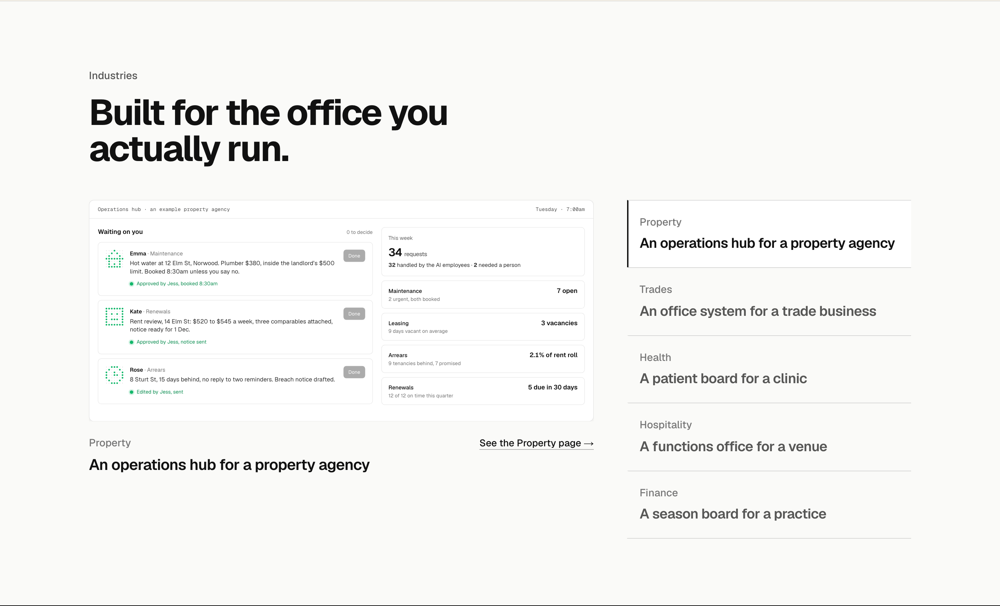
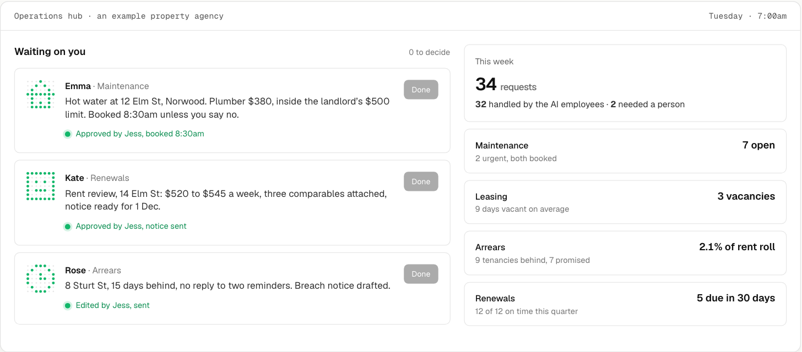
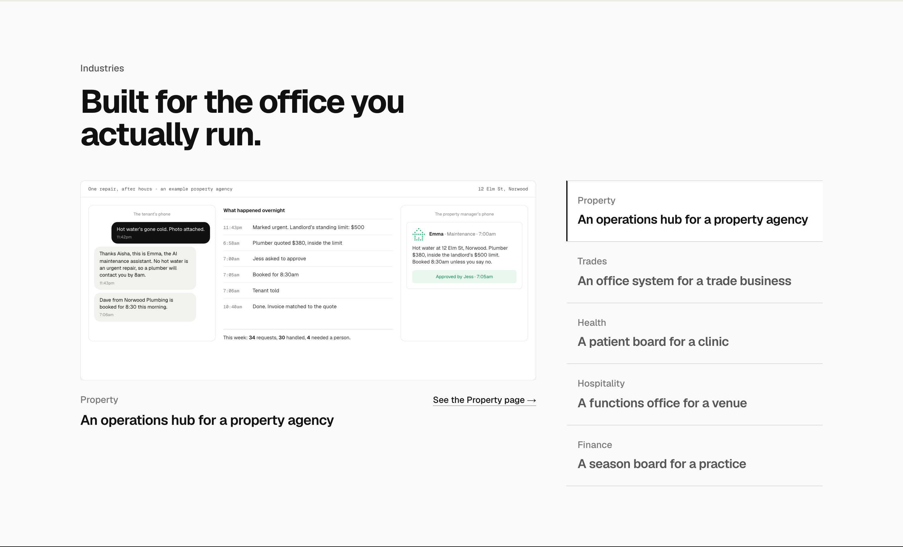
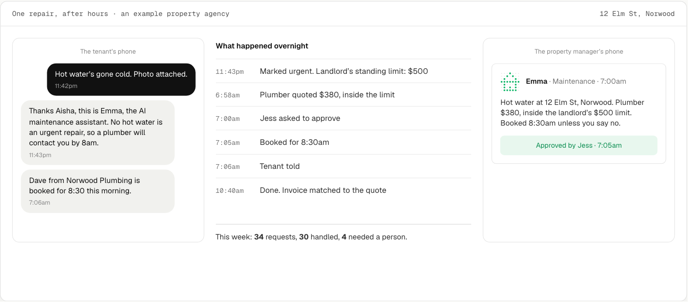
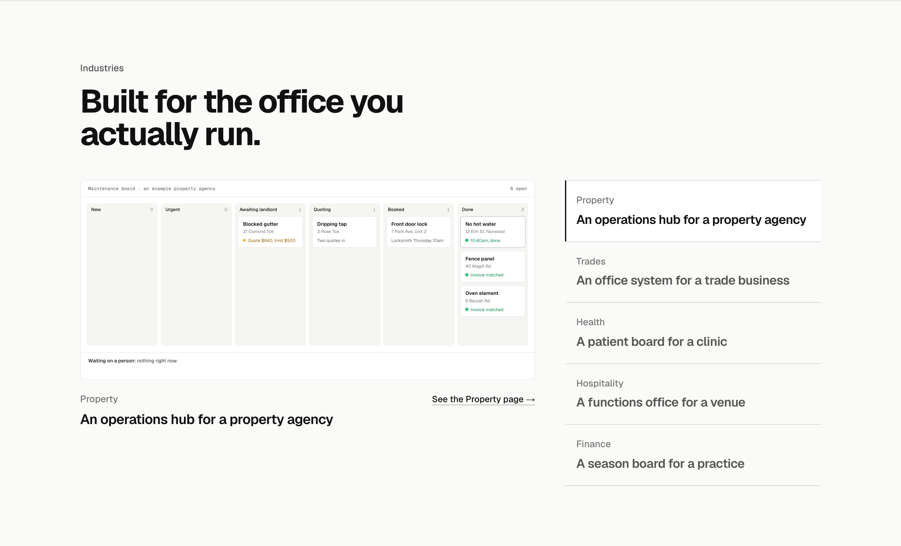
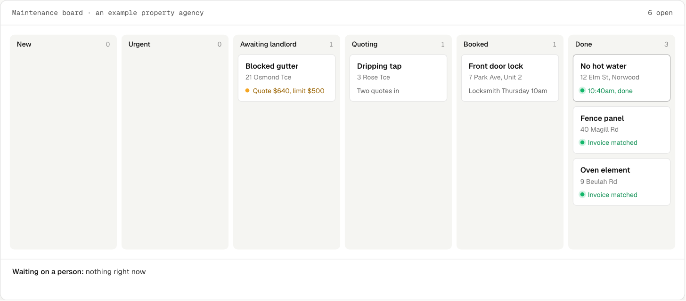

Industries: Property three ways
Homepage section 4 in your layout A: the five industries listed on the right, the big screen showing the active industry’s full system. Property is drawn three ways; the other four industries follow whichever you pick. Each shown in place at 1440, then the screen close up, in its finished state. All three play when they come into view at /lab/industries-property. Every name, address and figure is made up.
A. The hub’s morningThe approvals screen a principal opens at 7am: three decisions waiting, each from a named AI employee (Emma · Maintenance, Kate · Renewals, Rose · Arrears), approved one by one as it plays; the week’s count and the four boards beside it. Shows the whole system at once, and that a person decides everything that matters.


B. One repair, start to finishA tenant’s 11:42pm text, the overnight timeline with real timestamps, and the property manager’s single approval at 7:05am, on a split screen, with the week’s count under it. The research’s own pick: the problem every agency owner recognises, and the landlord’s limit and the person’s yes are on screen, so “what if it gets it wrong” is answered before it is asked. Recommended.


C. The maintenance boardThe jobs board with a no-hot-water card moving across it overnight from New to Done, pausing once for a person. Closest to the real product, and the busiest picture.

